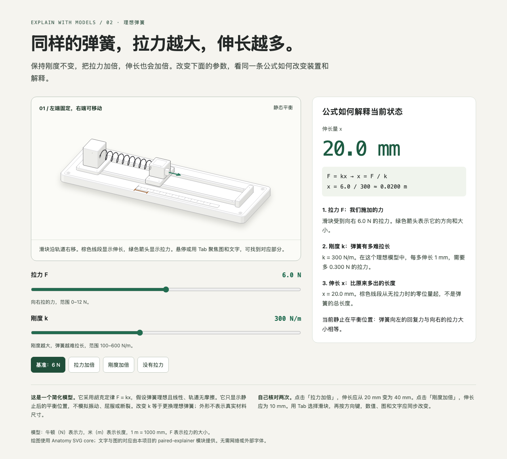

01 / Physical mechanism
Pull, stretch,
and see why.
Change force or spring stiffness. Watch the carriage move while the equation and explanation update with it.
Try this: Double the force. Then double the stiffness. Can you predict the extension?
Explore the spring balance →